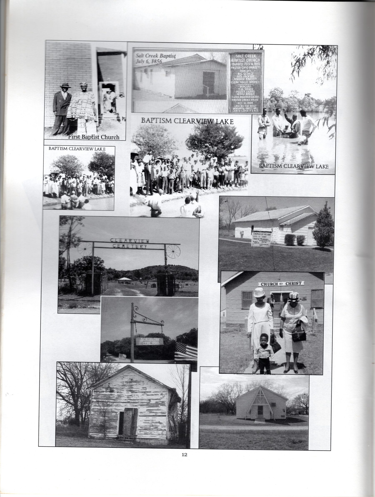
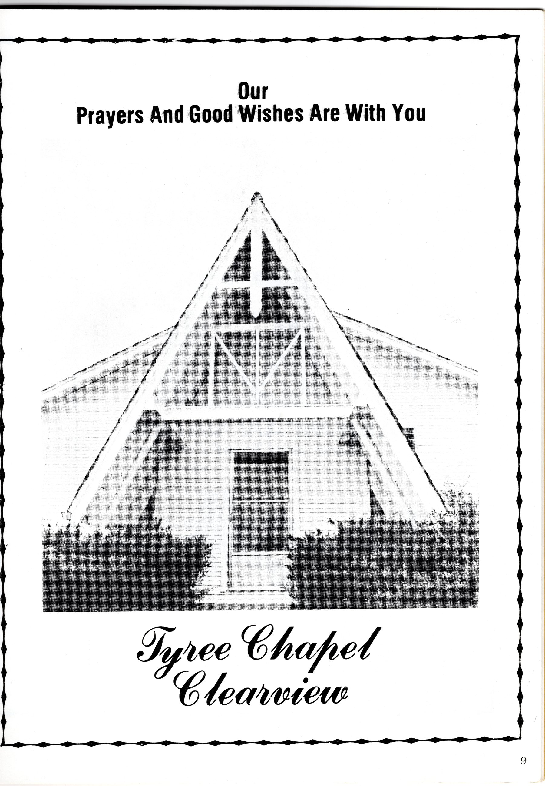
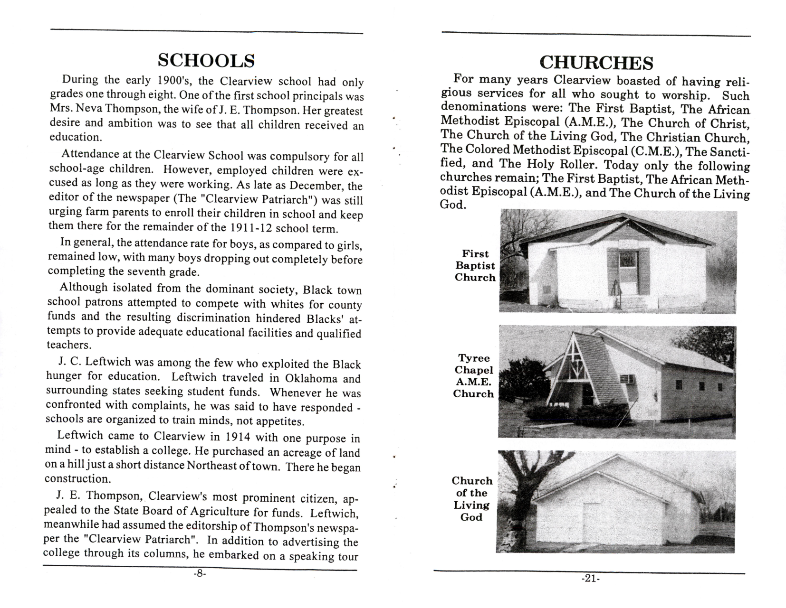
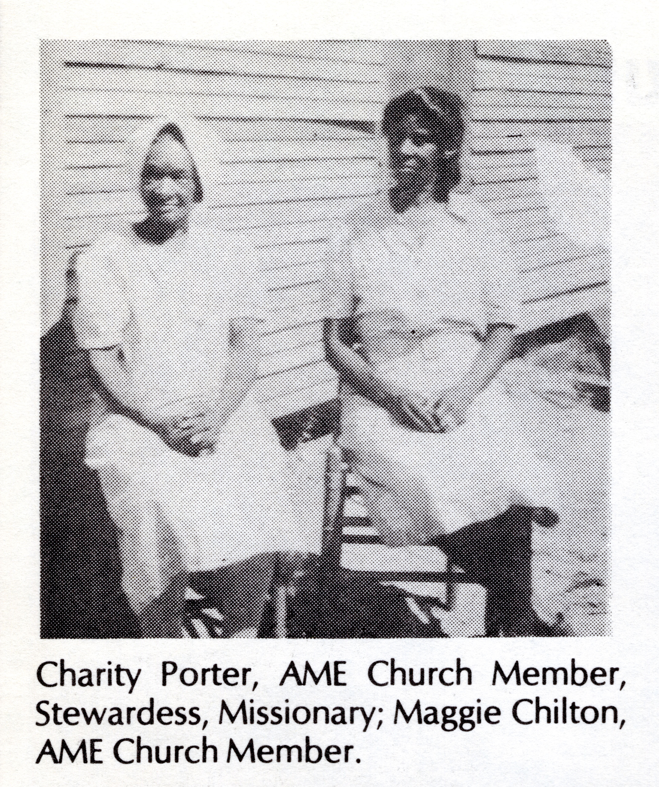
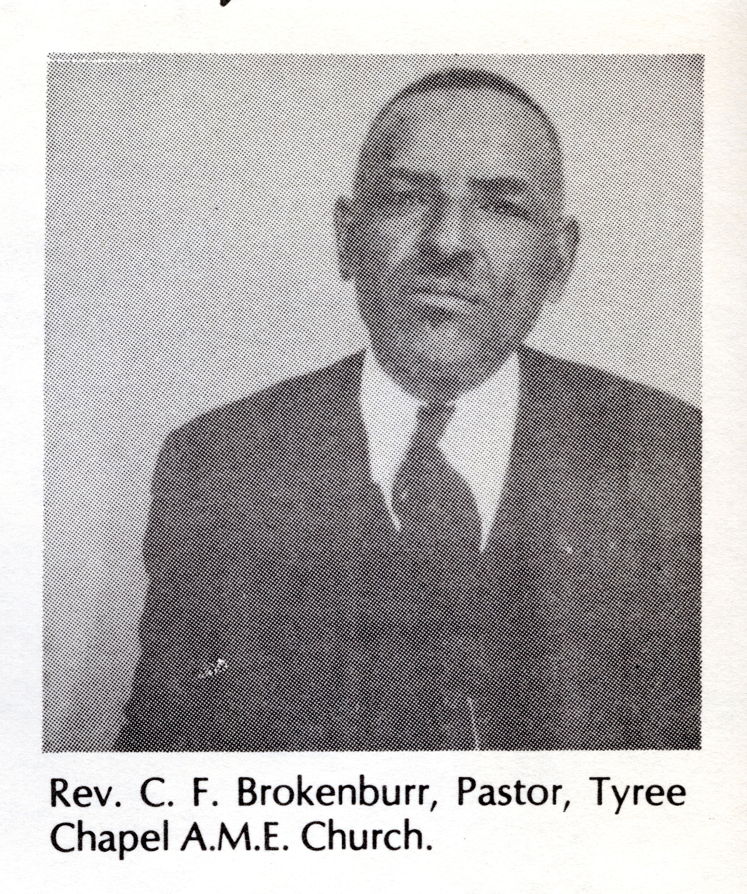
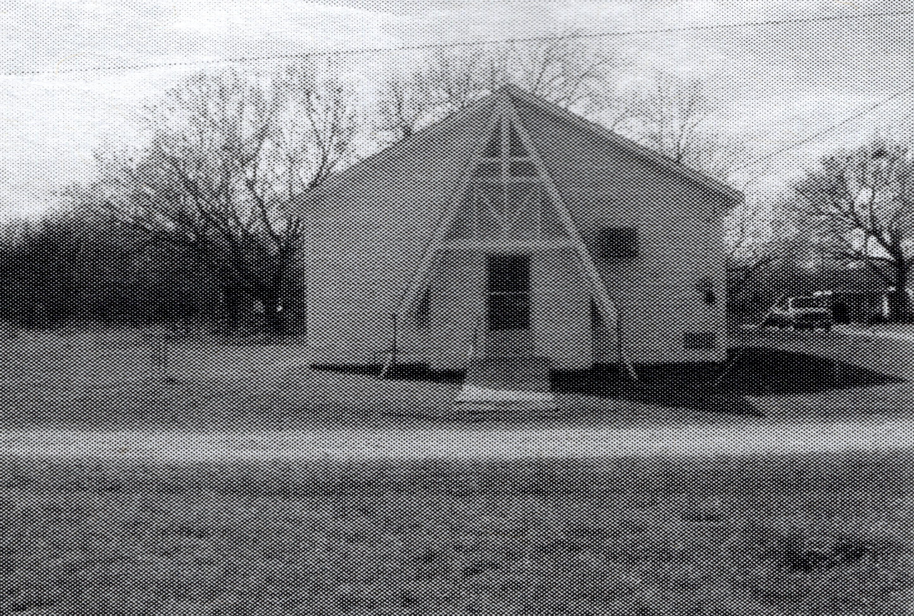
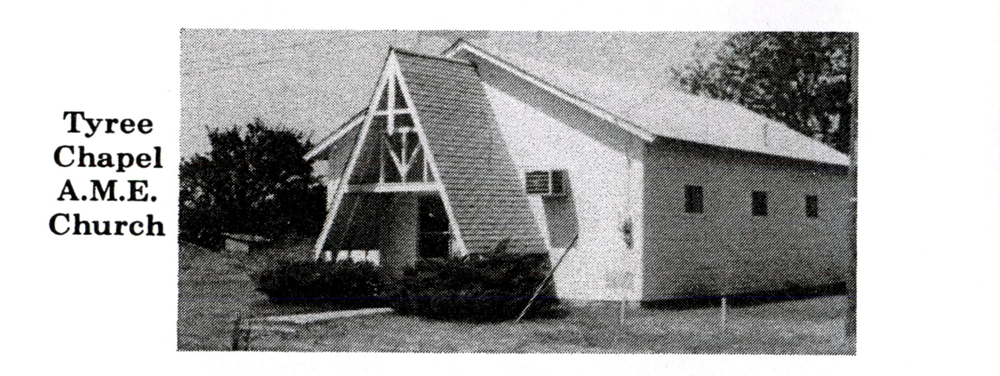
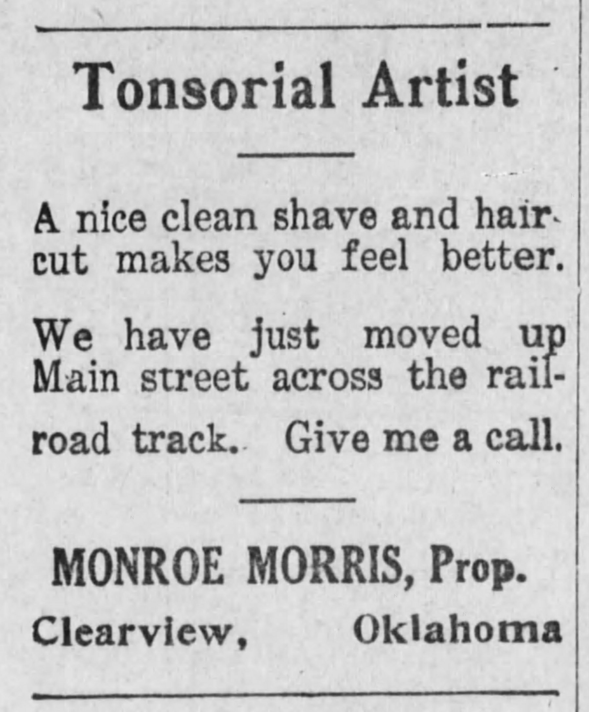
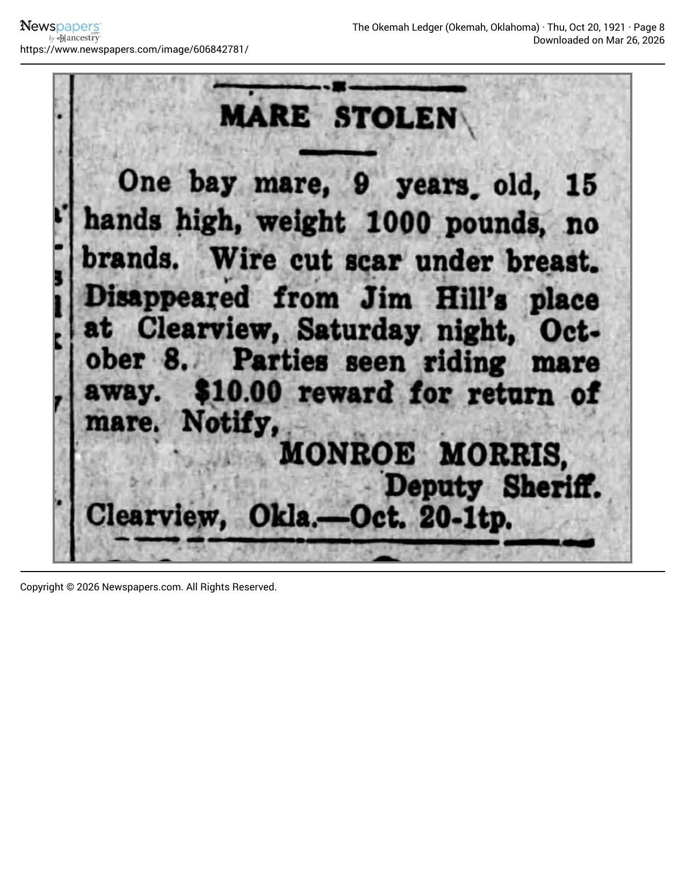

Businesses on this Sign 3 businesses
Tyree Chapel African Methodist Episcopal Church
Tyree Chapel African Methodist Episcopal Church (or Tyree's Tabernacle AME Church) was a long-serving church in Clearview dating back to at least 1911. Pastored by Rev. R. H. Hill and P. L. Lawson serving as superintendent in its early years, congregants gathered every other weekend for church and attended Sunday school, prayer, and class meetings throughout the week. The physical church was shared by Tyree Chapel and another church resulting in services alternating between the two each week with a union service on the fifth Sunday.
Attendees would regularly attend either church service regardless of their affiliation. The church hosted countless events including conferences, revivals, NAACP meetings, school programs, Minster and Laymen's Union meetings, harvest celebrations, and funerals. A parsonage was added next door for the preacher although for much of its history the church was served by traveling preachers from across the state. The church was rededicated in 1955 and renovated in 1962 and burned down sometime after 1970. Notable congregants included school superintendent F.D. Durham, O. M. Bradford, Rosie Swain, the Owens family, and the Withers family. As one of several churches that existed throughout Clearview's history, Tyree Chapel AME Church serves as an example of the social networks and diversity of religious expression present in Clearview.
Thomasense Withers Cudjoe recalls the renovation as well as the sacrifice made by the congregants to build the frame house church near the adjacent parsonage and outhouse. She remembers the pride that the members felt and the subsequent devastation when the church burned in later years.
Gallery








Sources
Monroe Morris
Tyree Chapel African Methodist Episcopal Church (or Tyree's Tabernacle AME Church) was a long-serving church in Clearview dating back to at least 1911.
Pastored by Rev. R. H. Hill and P. L. Lawson serving as superintendent in its early years, congregants gathered every other weekend for church and attended Sunday school, prayer, and class meetings throughout the week. The physical church was shared by Tyree Chapel and another church resulting in services alternating between the two each week with a union service on the fifth Sunday. Attendees would regularly attend either church service regardless of their affiliation.
The church hosted countless events including conferences, revivals, NAACP meetings, school programs, Minister and Laymen's Union meetings, harvest celebrations, and funerals. A parsonage was added next door for the preacher although for much of its history the church was served by traveling preachers from across the state. The church was rededicated in 1955 and renovated in 1962 and burned down sometime after 1970.
Notable congregants included school superintendent F.D. Durham, O. M. Bradford, Rosie Swain, the Owens family, and the Withers family. As one of several churches that existed throughout Clearview's history, Tyree Chapel AME Church serves as an example of the social networks and diversity of religious expression present in Clearview.
Thomasene Withers Cudjoe recalls the renovation as well as the sacrifice made by the congregants to build the frame house church near the adjacent parsonage and outhouse. She remembers the pride that the members felt and the subsequent devastation when the church burned in later years.
Gallery


Sources
AME Parsonage
Born in 1890 in Mississippi, Monroe Morris, after relocating to Clearview, worked at several occupations, including a barber (he called himself a tonsorial artist), deputy sheriff, and a photographer.
He operated this photographic studio for years, preserving images of the Clearview community. Morris also had farming interests.